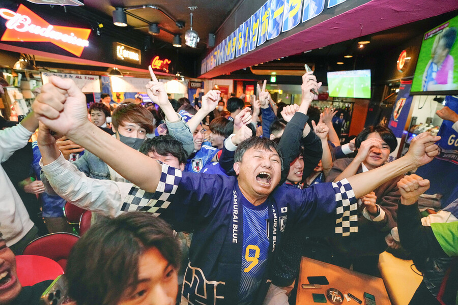

후반전의 승부사! 일본!
일본, 독일·스페인 격파 16강 진출에 열광

일본 축구 대표팀이 독일에 이어 스페인까지 격파하고 2022 카타르 월드컵 16강에 진출하자,
일본 열도가 “꿈만 같다”, “역사적 승리”라며 열광했다. 주요 언론은 방송과 인터넷으로
승리 소식을 전했고, 사회관계망서비스(SNS)에선 ‘역사적 승리’라며 기쁨을 나눴다. 일부
신문은 호외를 만들어 뿌리기도 했다. 일본은 2일 새벽 4시(한국 시간)부터 시작된 스페인
전에서 2-1 짜릿한 역전승을 거뒀다. 일본은 ‘죽음의 조’로 평가받던 E조에서 1위로 16강에
오르게 됐다. 월드컵 2회 연속 16강 진출이다. <요미우리신문>은 “월드컵 우승 경험이 있는
유럽 강호들을 상대로 멋진 역전승을 두 번이나 거둔 역대 최고의 조별리그가 됐다”고 전했다.